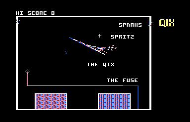
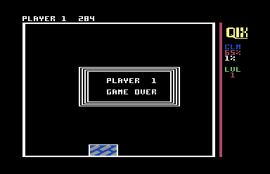

<meta charset="utf-8">
<meta name="viewport" content="width=device-width, initial-scale=1">
<title>Qix · Discoveries</title>
<link rel="preconnect" href="https://fonts.googleapis.com">
<link rel="stylesheet" href="https://fonts.googleapis.com/css2?family=Lato:wght@400;700;900&family=IBM+Plex+Mono:wght@400;500&display=swap">
<style>
:root{
  --bg:#23262d; --paper:#e9e7e1; --surface:#ffffff; --surface-2:#f1efea; --line:#d5d3cc; --line-soft:#e0ded8;
  --ink:#2f3136; --ink-soft:#55585f; --ink-mute:#80838a;
  --link:#1f5fa8; --link-hover:#154480; --accent:#1f5fa8;
  --amber:#c25a00; --cyan:#1f5fa8; --coral:#d04a3a; --green:#2a8a4a; --violet:#4a5bd6; --hl:#fff0c2;
  --chip:#2f3136; --chip-ink:#ffffff;
  --c64blue:#40318d; --c64grey:#686868;
  --fd:'Lato',system-ui,sans-serif; --fb:'Lato',system-ui,sans-serif; --fm:'IBM Plex Mono',ui-monospace,Menlo,monospace;
  --col:1080px; --gx:68px; --fs:17px; --lh:1.6; --hw:900; --h1:46px; --h2:26px; --sy:48px; --pp:26px; --r:10px;
  --plate-shadow:0 1px 2px rgba(0,0,0,.05),0 4px 14px rgba(0,0,0,.05);
}
*{box-sizing:border-box}
html{background:var(--bg);min-height:100%}
body{background:var(--paper);color:var(--ink);font-family:var(--fb);font-size:var(--fs);line-height:var(--lh);max-width:var(--col);margin:0 auto;min-height:100vh;padding:0 0 4rem}
h1,h2,h3{font-weight:var(--hw);letter-spacing:-.01em;text-wrap:balance;color:var(--ink);margin:0}
.wrap{padding:0 var(--gx)}
.hero{padding:48px var(--gx) 8px;text-align:left}
.eyebrow{font-family:var(--fm);font-size:12px;letter-spacing:.08em;text-transform:uppercase;color:var(--ink-mute);margin:0 0 10px}
.hero h1{font-size:var(--h1);line-height:1.15;letter-spacing:-.02em;margin:0 0 14px}
.hero .sub{margin:0 0 .6em;color:var(--ink-soft)}
section{padding:var(--sy) 0 24px}
section:last-of-type{border-bottom:none}
.fig{font-family:var(--fm);font-size:12px;letter-spacing:.08em;text-transform:uppercase;color:var(--ink-mute);margin:0 0 10px}
h2.t{font-size:var(--h2);margin-bottom:12px}
.lede{color:var(--ink-soft);margin:0 0 30px}
.plate{background:var(--surface);border:1px solid var(--line);border-radius:var(--r);padding:var(--pp);box-shadow:var(--plate-shadow)}
.cap{font-size:14px;color:var(--ink-mute);margin-top:14px;line-height:1.55}
.cap b{color:var(--ink);font-weight:700}
code{font-family:var(--fm);font-size:.82em;background:var(--chip);color:var(--chip-ink);border-radius:4px;padding:2px 6px;white-space:nowrap}
.qx-pair{display:flex;gap:18px;flex-wrap:wrap}
.qx-pair figure{margin:0;flex:1 1 300px}
.qx-pair img,.qx-cv{width:100%;image-rendering:pixelated;border-radius:4px;display:block}
.qx-ctl{display:flex;gap:10px;flex-wrap:wrap;align-items:center;margin:0 0 14px;font-size:15px}
.qx-ctl button{font-size:14px;padding:5px 12px}.qx-ctl select{font-size:14px}
.qx-ctl input[type=number]{width:7em;padding:4px 8px}
.qx-key{display:flex;gap:16px;flex-wrap:wrap;font-size:14px;color:var(--ink-soft);margin-top:10px}
.qx-key i{display:inline-block;width:12px;height:12px;border-radius:2px;margin-right:6px;vertical-align:-1px}
.qx-tab{border-collapse:collapse;width:100%;font-size:14px}
.qx-tab th,.qx-tab td{border-bottom:1px solid var(--line-soft);padding:6px 8px;text-align:left;vertical-align:top}
.qx-tab th{font-weight:700;color:var(--ink-soft)}
.qx-tab td.qx-on{background:var(--hl)}
.qx-out{font-family:var(--fm);font-size:15px}
.qx-out b{font-size:20px}
.qx-miss{font-size:14px;color:var(--coral)}
.qx-scroll{overflow-x:auto}
.qm-wrap{display:flex;gap:18px;flex-wrap:wrap;align-items:flex-start}
.qm-cv{flex:2 1 320px;max-width:560px;background:#000}
.qm-side{flex:1 1 220px;min-width:0}
.qm-read{color:var(--ink);font-family:var(--fm);font-size:13px;line-height:1.5;margin:0 0 10px;padding:10px 12px;background:var(--surface-2);border-radius:6px;white-space:pre-wrap}
.qm-log{font-family:var(--fm);font-size:12px;line-height:1.45;color:var(--ink-soft);margin:0;padding:0;list-style:none;max-height:220px;overflow:auto}
.qm-log li{margin:0 0 4px}
.qm-log b{color:var(--ink-mute);font-weight:400}
.qm-log li.qm-k{color:var(--coral);font-weight:500}
.qm-log li.qm-f{color:var(--amber)}
@media (max-width:640px){:root{--gx:18px;--h1:36px;--pp:16px}}
</style>
<!-- tabs -->
<header class="hero">
  <p class="eyebrow">1989 · Taito America</p>
  <h1>Qix</h1>
  <p class="sub">What a player who finished the game would not know: the Qix's trail kills late, a cornered Qix jumps back in time, splitting the Qix pays less than the manual says, the second Qix reads the first one's position, and the game reloads itself from disk after every game.</p>
</header>
<main class="wrap">

<section>
  <p class="fig">01 · The trail</p>
  <h2 class="t">Secret: the Qix's whole trail can kill you, up to eight steps late</h2>
  <p>The Qix on screen is eight lines, the newest and the seven before it, kept in tables of ten slots, of which the game uses eight (<code>$021E</code>). The game draws a new line and erases the oldest with one pixel routine (<code>$AD64</code>). That routine checks every pixel against the line you are drawing, whether it is drawing or erasing. So the newest line kills when it is drawn across your line, and the oldest kills when it is erased from under it.</p>
  <p>A line you draw across the middle of the trail is safe for a moment. The old Qix line it crossed is still on screen, and the game does not check it again until it becomes the oldest. Then the step that erases that line takes your life, up to seven steps, half a second, after you crossed it. With a pixel of a line being drawn placed under trail lines of different ages, five kills in six come from the erase.</p>
  <p>The erase clears every pixel of the old line, including the pixels where newer lines cross it, so the trail on screen has small gaps. Drawing a line over a Qix pixel flips the pixel's colour bits instead of setting them, so crossings change colour.</p>
</section>

<section>
  <p class="fig">02 · The fallback</p>
  <h2 class="t">Secret: a cornered Qix jumps back to where it was eight steps ago</h2>
  <p>The edge tests check each end's move. They cannot see the line between the two new ends, which can cross a claimed corner when the open field is not a rectangle. The game tests that line last (<code>$9774</code>). When it crosses, the game gives up on the step and puts the Qix on the line in the trail slot it is about to overwrite: the oldest line, the one it erased at the start of this step. The timer is cleared, so the Qix turns on the next step.</p>
  <p>On screen the Qix jumps back to where it was eight steps before. With a peninsula of claimed edge in the field, in 500 steps the Qix falls back five times, and each time it lands on its line from exactly eight steps earlier. Choose <b>A peninsula</b> or <b>A claimed corner</b> in the viewer on <a href="mechanics.html#the-qix">How it works</a> and watch its log for it.</p>
</section>

<section>
  <p class="fig">03 · Scoring</p>
  <h2 class="t">Bug: splitting the Qix does not double the score</h2>
  <p class="lede">The manual says splitting two Qix multiplies the points for every fill after it. The code doubles only the low byte.</p>
  <div class="plate">
    <div class="qx-ctl"><label>Pixels filled <input type="number" id="qx-area" value="4000" min="0" max="65535"></label>
      <button type="button" id="qx-slow" aria-pressed="true">Slow</button><button type="button" id="qx-fast" aria-pressed="false">Fast</button>
      <label>Splits so far <select id="qx-splits"><option>0</option><option selected>1</option><option>2</option><option>3</option></select></label></div>
    <p class="qx-out" id="qx-score"></p>
    <p class="cap">The arithmetic of <code>$8E60</code>, written again in JavaScript.</p>
  </div>
  <p>A fill is worth half its area in pixels, doubled for a slow line (<code>$8E60</code>). A line counts as fast when it ends with fire released. Each time a player splits the Qix, which ends the level at once, a counter goes up, and it stays up for the rest of the game. The score routine doubles the points once for each split, with a loop that adds the low byte to itself and carries into the high byte without doubling it. Below 256 points the doubling is right; above, most of the bonus is lost. A 4,000-pixel slow fill after one split scores 4,160 where it should score 8,000, and after two splits 4,224 where it should score 16,000.</p>
</section>

<section>
  <p class="fig">04 · Qix 2's edge test</p>
  <h2 class="t">Bug: the second Qix checks one of its moves at the first Qix's height</h2>
  <p class="lede">On levels with two Qix, one line of the second Qix's edge test reads the first Qix's position.</p>
  <p>Each Qix checks every move against the claimed edges before it makes it (<a href="mechanics.html#the-qix">How it works</a>). Qix 1 uses <code>qix1_check_line</code> (<code>$96CA</code>), and Qix 2 a copy of it, <code>qix2_check_line</code>. The copy is the same apart from its addresses, except for one line: at <code>$982F</code> it loads <code>$028A</code>, Qix 1's second end's height, where it should load <code>$028E</code>, its own.</p>
  <p>That line belongs to the test of Qix 2's second end moving across on its own. The game draws a test line from the end's old position to its new position across, but at Qix 1's height. So Qix 2 can bounce off an edge its move would not have crossed, or miss one that it would have. Qix 1 never makes the mistake, and on levels with one Qix the slip never runs.</p>
  <p>A recording of 400 steps of a two-Qix level, with every random number the game drew, shows the slip at work. The viewer's port of the step, run on those numbers, matches all 400 steps with the slip and drifts from the game after 288 with the line read correctly. The viewer on How it works keeps the slip, so its second Qix moves as the game's does.</p>
</section>

<section>
  <p class="fig">05 · Loading</p>
  <h2 class="t">Secret: the game reloads itself after every game</h2>
  <p>Play uses almost all of memory: the three copies of the field, the music's space at <code>$E000</code> and the title's code. So when a game ends, the C64 loads the whole program again from disk (<code>$1B97</code>). The attract demonstration, which plays a game by itself after the title tune, loads the title picture back (<code>$C2E0</code>), and every level end loads a 134-byte file called TAITO that the game never runs (<code>$1A8D</code>). Each load comes with three tries and a "DRIVE ERROR / CHECK THE DISK" screen.</p>
  <div class="qx-pair">
    <figure><p class="cap">The attract demonstration, driving the real game engine with scripted input and naming each enemy as it appears.</p></figure>
    <figure><p class="cap">Game over: next comes a load of the whole game.</p></figure>
  </div>
</section>

<section>
  <p class="fig">06 · The unused sound</p>
  <h2 class="t">Secret: the game never plays one of its twelve sound effects</h2>
  <p>The sound-effect player has twelve effects, and the program asks for eleven of them. Every call to <code>play_sfx</code> (<code>$8814</code>) loads its effect number directly, except the Qix's step, which picks 3 or 4. None of them gives 2. Effect 2 is still in the tables: a 51-frame effect on one voice. <code>play_sfx</code> even lists it among the five effects allowed to cut into one that is playing, beside the alarm, the death, the game's start and silence, so it was meant for something that mattered. Play it on the <a href="music.html#the-sound-effects">Music</a> tab.</p>
</section>

</main>
<footer style="margin:16px 0 0;padding:22px var(--gx) 0;border-top:1px solid #e0ded8;font-family:'IBM Plex Mono',ui-monospace,Menlo,monospace;font-size:12px;color:#80838a"><a href="https://github.com/gamesexplained/gamesexplained" aria-label="GitHub" style="display:inline-flex;align-items:center;justify-content:center;width:26px;height:26px;margin-left:8px;border:1px solid #e0ded8;border-radius:7px;background:#ffffff;color:#80838a;vertical-align:middle"><svg width="15" height="15" viewBox="0 0 24 24" fill="currentColor" aria-hidden="true"><path d="M12 .297c-6.63 0-12 5.373-12 12 0 5.303 3.438 9.8 8.205 11.385.6.113.82-.258.82-.577 0-.285-.01-1.04-.015-2.04-3.338.724-4.042-1.61-4.042-1.61C4.422 18.07 3.633 17.7 3.633 17.7c-1.087-.744.084-.729.084-.729 1.205.084 1.838 1.236 1.838 1.236 1.07 1.835 2.809 1.305 3.495.998.108-.776.417-1.305.76-1.605-2.665-.3-5.466-1.332-5.466-5.93 0-1.31.465-2.38 1.235-3.22-.135-.303-.54-1.523.105-3.176 0 0 1.005-.322 3.3 1.23.96-.267 1.98-.399 3-.405 1.02.006 2.04.138 3 .405 2.28-1.552 3.285-1.23 3.285-1.23.645 1.653.24 2.873.12 3.176.765.84 1.23 1.91 1.23 3.22 0 4.61-2.805 5.625-5.475 5.92.42.36.81 1.096.81 2.22 0 1.606-.015 2.896-.015 3.286 0 .315.21.69.825.57C20.565 22.092 24 17.592 24 12.297c0-6.627-5.373-12-12-12"/></svg></a><a href="https://discord.gg/3V9GWyRDWV" aria-label="Discord" style="display:inline-flex;align-items:center;justify-content:center;width:26px;height:26px;margin-left:8px;border:1px solid #e0ded8;border-radius:7px;background:#ffffff;color:#80838a;vertical-align:middle"><svg width="15" height="15" viewBox="0 0 24 24" fill="currentColor" aria-hidden="true"><path d="M20.317 4.3698a19.7913 19.7913 0 00-4.8851-1.5152.0741.0741 0 00-.0785.0371c-.211.3753-.4447.8648-.6083 1.2495-1.8447-.2762-3.68-.2762-5.4868 0-.1636-.3933-.4058-.8742-.6177-1.2495a.077.077 0 00-.0785-.037 19.7363 19.7363 0 00-4.8852 1.515.0699.0699 0 00-.0321.0277C.5334 9.0458-.319 13.5799.0992 18.0578a.0824.0824 0 00.0312.0561c2.0528 1.5076 4.0413 2.4228 5.9929 3.0294a.0777.0777 0 00.0842-.0276c.4616-.6304.8731-1.2952 1.226-1.9942a.076.076 0 00-.0416-.1057c-.6528-.2476-1.2743-.5495-1.8722-.8923a.077.077 0 01-.0076-.1277c.1258-.0943.2517-.1923.3718-.2914a.0743.0743 0 01.0776-.0105c3.9278 1.7933 8.18 1.7933 12.0614 0a.0739.0739 0 01.0785.0095c.1202.099.246.1981.3728.2924a.077.077 0 01-.0066.1276 12.2986 12.2986 0 01-1.873.8914.0766.0766 0 00-.0407.1067c.3604.698.7719 1.3628 1.225 1.9932a.076.076 0 00.0842.0286c1.961-.6067 3.9495-1.5219 6.0023-3.0294a.077.077 0 00.0313-.0552c.5004-5.177-.8382-9.6739-3.5485-13.6604a.061.061 0 00-.0312-.0286zM8.02 15.3312c-1.1825 0-2.1569-1.0857-2.1569-2.419 0-1.3332.9555-2.4189 2.157-2.4189 1.2108 0 2.1757 1.0952 2.1568 2.419 0 1.3332-.9555 2.4189-2.1569 2.4189zm7.9748 0c-1.1825 0-2.1569-1.0857-2.1569-2.419 0-1.3332.9554-2.4189 2.1569-2.4189 1.2108 0 2.1757 1.0952 2.1568 2.419 0 1.3332-.946 2.4189-2.1568 2.4189Z"/></svg></a><br>© Games Explained contributors. Write-ups, facts and symbol maps are available under <a href="https://creativecommons.org/licenses/by-sa/4.0/" style="color:#1f5fa8;text-decoration:none">CC BY-SA 4.0</a>; code under <a href="https://opensource.org/licenses/MIT" style="color:#1f5fa8;text-decoration:none">MIT</a></footer>
<script>
(function () {
'use strict';
const $ = (id) => document.getElementById(id);
// ---- 03 the score
let slow = true;
function score() {
  const area = Math.max(0, Math.min(65535, +$('qx-area').value || 0)), s = +$('qx-splits').value;
  let p = area >> 1; if (slow) p = (p << 1) & 0xFFFF;
  let right = p; for (let i = 0; i < s; i++) right *= 2;
  for (let i = 0; i < s; i++) { const lo = (p & 255) * 2; p = ((p & 0xFF00) + lo) & 0xFFFF; }
  $('qx-score').innerHTML = 'The game scores <b>' + p.toLocaleString('en') + '</b>' + (s ? '; a true doubling would give ' + right.toLocaleString('en') : '') + '.';
}
$('qx-slow').onclick = () => { slow = true; $('qx-slow').setAttribute('aria-pressed', true); $('qx-fast').setAttribute('aria-pressed', false); score(); };
$('qx-fast').onclick = () => { slow = false; $('qx-slow').setAttribute('aria-pressed', false); $('qx-fast').setAttribute('aria-pressed', true); score(); };
$('qx-area').oninput = score; $('qx-splits').onchange = score; score();

})();
</script>
